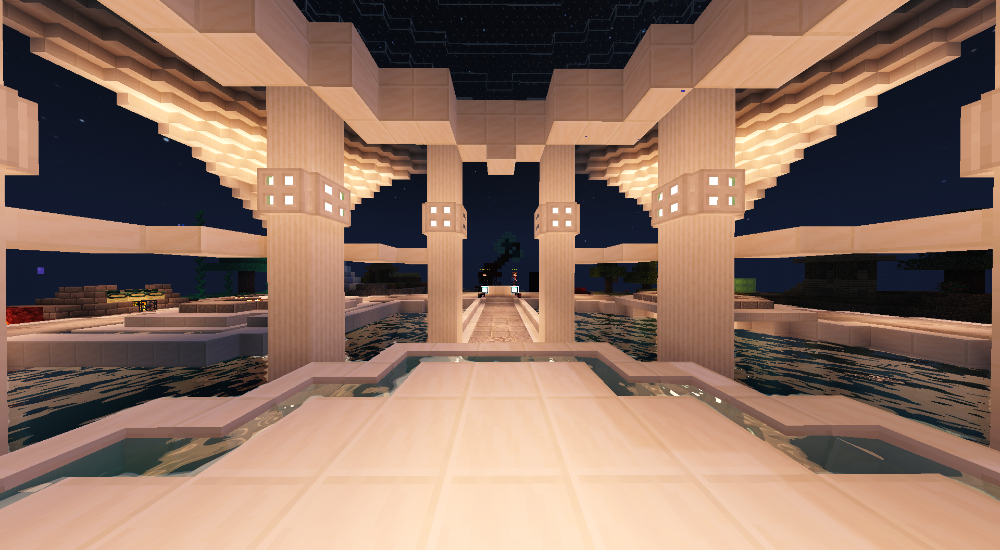
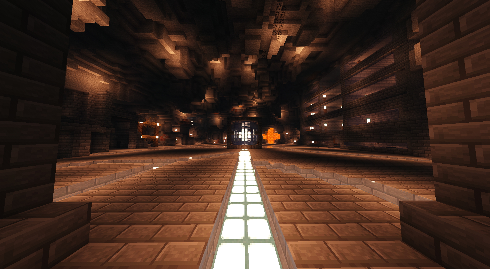
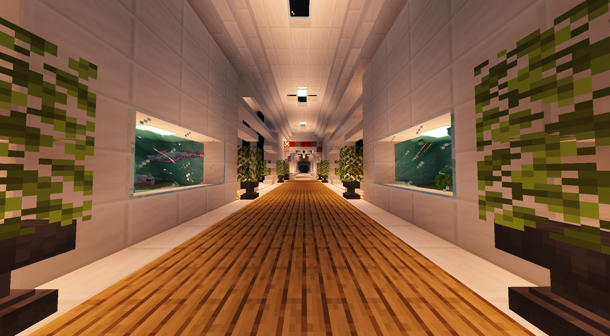
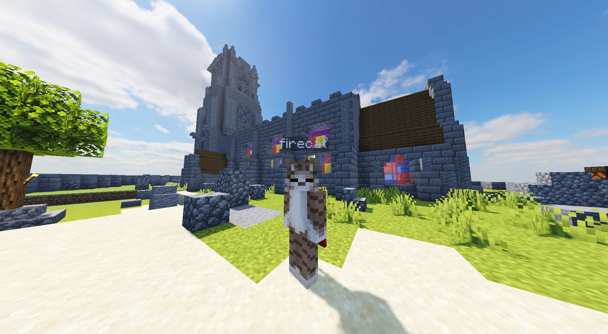
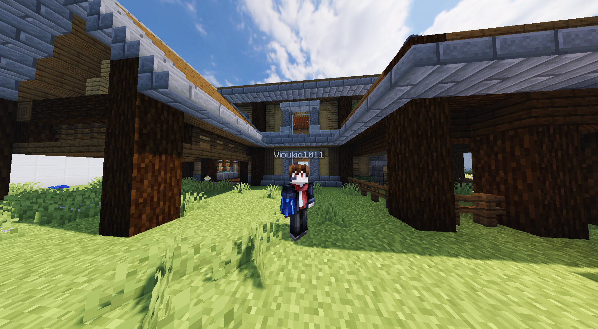

<!DOCTYPE html>
<html lang="zh-Hant">
<title>Minecraft 建築介紹</title>
<meta charset="UTF-8">

<meta name="viewport" content="width=device-width, initial-scale=1">

<link rel="stylesheet" href="CSS/min.css">

<!-- <link rel="stylesheet" href="CSS/Raleway"> -->

<style>
body,h1,h2,h3,h4,h5,h6 {font-family: "Raleway", sans-serif}
</style>
<body class="css-content"  style="max-width:1600px;background-color:rgb(37, 37, 37)"></body>


<!-- Sidebar/menu -->

<nav class="css-sidebar css-collapse css-animate-left" style="z-index:3;width:300px;background-color:rgb(19, 19, 19)" id="mySidebar"><br>
  <div class="css-container">
    
    <a href="#" onclick="css_close()" class="css-hide-large css-right css-jumbo css-padding css-hover-grey" title="close menu">

    </a>

    </div>
    
      <a href="index.html" ></a><br><br>

      <h2 style="text-align:center;color: yellowgreen;"><b>建築介紹</Label></b></h2>
      
    </div>
  <div class="css-bar-block">
    <br>

    <a href="#portfolio" onclick="css_close()"  style="text-align:center;color: rgb(160, 160, 160);font-size:25px" class="css-bar-item css-button ">總覽</a> 
    <br>
    <a href="#about" onclick="css_close()" style="text-align:center;color: rgb(160, 160, 160);font-size:25px" class="css-bar-item css-button ">關於</a> 

  </div>


</nav>

<!-- Overlay effect when opening sidebar on small screens -->
<div class="css-overlay css-hide-large css-animate-opacity" onclick="css_close()" style="cursor:pointer" title="close side menu" id="myOverlay"></div>

<!-- !PAGE CONTENT! -->
<div class="css-main" style="margin-left:300px">
  
  <!-- Header -->
  <header id="portfolio">
    <div class="css-container">

    <br>
    
 

    </div>
  </header>
  
 <!-- First Photo Grid-->
</b><div class="css-row-padding">
  <div class="css-container" style="text-align:center;color: rgb(160, 160, 160);background-color:rgb(19, 19, 19)"><h2><b>總覽</Label></b></h2>
 
 <!-- page-1 -->
 <div class="css-third css-container css-margin-bottom">
   
   <a href="Tad-Window\page-1.html"></a>
   
   <div class="css-container" style="background-color:rgb(0, 0, 0)">
     
     <a href="Tad-Window\page-1.html" style="text-align:center;color: rgb(160, 160, 160);"><h4><b>伺服器大廳</b></h4></a>
     
     <p style="text-align:center;color: rgb(160, 160, 160);">進入伺服器的出生點</p>
   </div>
 </div>
 
  <!-- page-2 -->

 <div class="css-third css-container css-margin-bottom">
   
   <a href="Tad-Window\page-2.html" style="text-align:center;"></a>

   <div class="css-container" style="background-color:rgb(0, 0, 0)">

     <a href="Tad-Window\page-2.html" style="text-align:center;color: rgb(160, 160, 160);"><h4><b>洞穴城鎮</b></h4></a>
     
     <p style="text-align:center;color: rgb(160, 160, 160);">由中間核心供給能量為生的小城鎮</p>
   </div>
 </div>

  <!-- page-3 -->
 
  <div class="css-third css-container css-margin-bottom">

   <a href="Tad-Window\page-3.html"></a>

   <div class="css-container" style="background-color:rgb(0, 0, 0)">

     <a href="Tad-Window\page-3.html" style="text-align:center;color: rgb(160, 160, 160);"><h4><b>成品展示大廳</b></h4></a>

     <p style="text-align:center;color: rgb(160, 160, 160);">展示指令和紅石的研究成果</p>

   </div>
 </div>


<!-- page-4 -->

 <div class="css-third css-container css-margin-bottom">

   <a href="Tad-Window\page-4.html"></a>

   <div class="css-container" style="background-color:rgb(0, 0, 0)">

     <a href="Tad-Window\page-4.html" style="text-align:center;color: rgb(160, 160, 160);"><h4><b>生存服村莊</b></h4></a>

     <p style="text-align:center;color: rgb(160, 160, 160);">一場從零開始的世界</p>

   </div>
 </div>
 
  <!-- page-5 -->

 <div class="css-third css-container css-margin-bottom">

   <a href="Tad-Window\page-5.html"></a>  
    
   <div class="css-container" style="background-color:rgb(0, 0, 0)">

     <a href="Tad-Window\page-5.html" style="text-align:center;color: rgb(160, 160, 160);"><h4><b>中世紀城鎮</b></h4></a>

     <p style="text-align:center;color: rgb(160, 160, 160);">沿著原本地形而建充滿中世紀風格的城鎮</p>

   </div>
 </div>

  <!-- page-6 -->

  <div class="css-third css-container">

   <a href="Tad-Window\page-6.html"></a>

   <div class="css-container" style="background-color:rgb(0, 0, 0)"> 

     <a href="Tad-Window\page-6.html" style="text-align:center;color: rgb(160, 160, 160);"><h4><b>競技場</b></h4></a>

     <p style="text-align:center;color: rgb(160, 160, 160);">來場熱血的對戰吧！</p>
   </div>
 </div>   
</div>

      <!-- end -->

      
  <br>
  <br>


  <!-- Images of Me -->
  
  <div class="css-row-padding">
    <div class="css-container" style="background-color:rgb(19, 19, 19)">

      <h3 style="text-align:center;color: rgb(160, 160, 160);" id="about"><b>關於我們</b></h3>

      <h4 style="text-align:center;color: rgb(160, 160, 160);"><b> 這個伺服器是由兩位負責建築和兩位負責指令的玩家與許多自製地圖而成,雖然每個人都是剛入門的新手,但每個人都把能做的做到了最好,目前還在研究更多的建築風格和更多的建築呈現方式</b></h4>
      
      <div class="css-row-padding css-padding-16" >
        <div class="css-col m6">
          
          

        </div>
        <div class="css-col m6">

          
    
        </div>
        <br>
        <div class="css-col m6">
          
          
    
        </div>
        <div class="css-col m6">
          
          
    
        </div>
      </div>

  <!-- <div class="css-container css-padding-large" style="margin-bottom:32px"> -->
   </div>
  </div>


  <div class="css-container css-padding-large" style="margin-bottom:32px">
    
</div>

<script>
// Script to open and close sidebar
function css_open() {
    document.getElementById("mySidebar").style.display = "block";
    document.getElementById("myOverlay").style.display = "block";
}
 
function css_close() {
    document.getElementById("mySidebar").style.display = "none";
    document.getElementById("myOverlay").style.display = "none";
}
</script>

</body>
</html>
